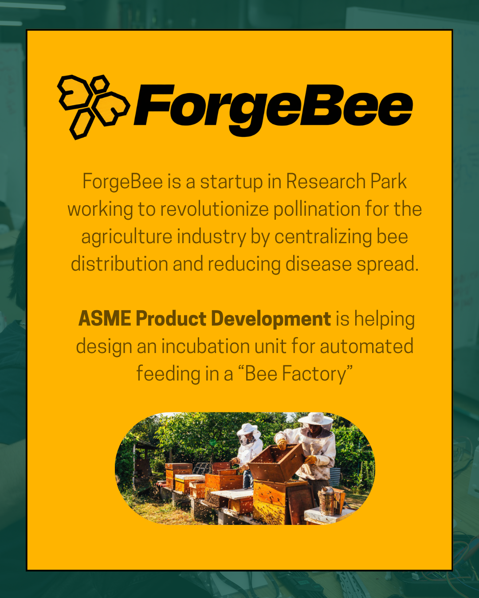
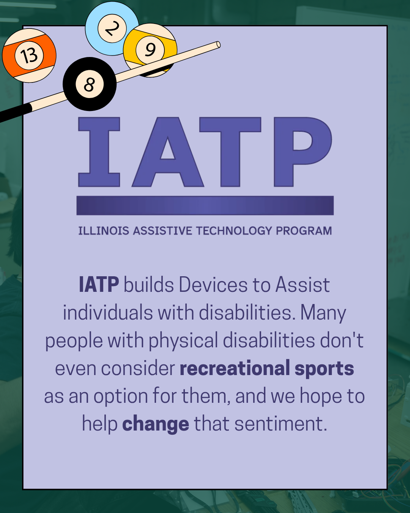
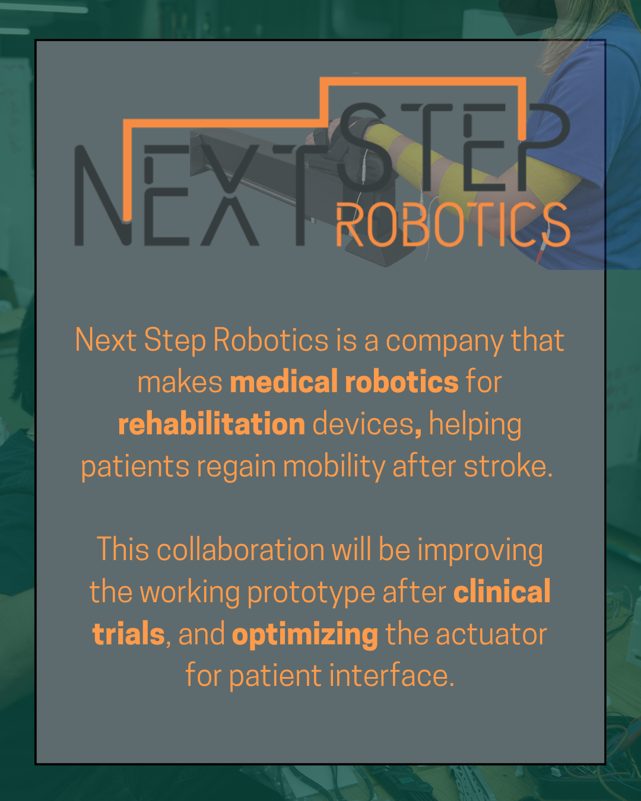

I'm one of the directors of the Product Development for ASME @ Illinois. This committee partners with industry and academic clients to work on projects for a multi-semester product development cycle with the opportunity to present at the annual Illinois Engineering Open House. Since most of our students are in Mechanical Engineering, we typically look for hardware prototyping projects. The main goal for this committee is to serve as a stepping stone for UIUC's MechSE Senior Capstone ME 470.
As director, I help find and coordinate these collaborations rather than working on them directly. Managing logistics like meeting schedules, budgeting and resources, communication and logistics, and purchasing through the university's procurement system. Each project is catered toward's the clients needs, so we try to meet their specific requirements as best as possible.
After many, many cold emails to find potential clients, we found 4 interesting projects for the 2026-2027 academic year. Finding suitable collaborations was a bit of a challenge in itself, as many companies are hesitant to trust a student group, have IP/legal issues, or have few projects in the prototyping/ideation stage that match the academic year's timeline. There was also the goal of finding a range of multidisciplinary focuses, including bio-tech and robotics.
After finalizing the year's projects, we wanted to ensure each project was set up for success. Through multiple meetings with the clients for ideation and planning, we developed documents detailing project scope, timeline, and overviews, as well as preliminary design ideas and resources. Because the majority of students working on the projects will be underclsasmen seeking industry experiences, we wanted to provide as many resources as possible to help them succeed.
This project is designing an outreach focused kit to inspire young, underrepresented communities to pursue Engineering using a “Build a Walker” kit with modular parts, being able to exchange multiple variables to demonstrate different ideas about balance, center of mass, forces, types of gaits, etc. With a modular motor/battery pack, walkers can run through a series of challenges (climbing/descending a hill, pushing a block, etc) visually demonstrate these effects. The final product will be mostly laser cut and easily mass produced, but taking advantage of 3D printing and rapid prototyping while developing the designs.
This is in collaboration with Dr. Justin Yim, who runs the Novel Mobile Robots Lab, and also teaches ME 370: Mechanical Design I. This project is basically designing a modular version of the ME 370 Final Project, so its been fun watching underclassmen work on things I'm actively learning in class. Because of this, this project also involved some extra effort in preparing documentation and resources for the students. I made a few example linkages, as well as design and assembly guidelines, especially in 2.5D-style manufacturing on a 3D printer and basic joint design principles with 3D printing.


